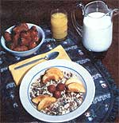

Looking for a versatile, healthful, scrumptions homemade cereal? Try . . .
What nutritious raw food cereal can be eaten as a tasty morning breakfast, an energizing on-trail snack, or-with the addition of fruit and yogurt-a complete supper or dessert?
Why, Birchermuesli , of course! And I'm going to tell you just how to fix the tastebud-pleasing cereal . . . but first-if you're unfamiliar with the popular "Swiss Breakfast"-you may be wondering just how to pronounce it! So here's an instant enunciation lesson: Simply say BIR-ker-MEW-slee. Try again: BIR-ker-MEW-slee. That's right. (You're now ready to sit down in a fancy restaurant and say, "I'll have Birchermuesli, please.")
You might also wonder how Birchermuesli happened to come by its unusual name. Well, there's a simple answer to that question, too. Muesli is the Swiss word for "mush" (which is, perhaps, a poor choice of words ... since mush is a term most often used to describe food that's been cooked to death!), while Bir cher comes from the name of the doctor who-recognizing the curative powers of raw food-created the fruit/nut/grain mixture . . . a fellow named Maximilian Oskar Bircher-Benner.
The physician was head of the Life-Force Sanitorium (on the slopes of the Zurichberg outside Zurich, Switzerland) in the late nineteenth century, and is known for his ground-breaking work with raw food nutritional therapy. Since the good doctor's death, both his son (Dr. Ralph Bircher) and his daughter (Ruth Bircher-Benner, author of Eating Your Way to Health , Penguin, 1973) have continued to spread knowledge about healthful eating in general, and the benefits of raw foods in particular.
Bircher-Benner repeatedly observed-in the course of his practice-that a diet of wholesome, uncooked foods improved the health of many of his patients . . . even some who were on the verge of death. The Swiss physician attributed the restorative effects to the fact that raw plant foods are direct products of the sun.
Ralph Bircher has since claimed that the success of his father's diet was due to the "great variety of enzymes" contained in the uncooked foods. (Most of Bircher-Benner's medical contemporaries, by the way, flat out rejected the entire concept of nutritional therapy.)
But whatever healthful effects the Life-Force doctor's diet plan may have, you can be darn sure of at least one benefit to be derived from his cereal discovery: Birchermuesli tastes greatl In fact, whether your usual breakfast is home-roasted granola or comes from a box in the supermarket, I guarantee that after one dish of the Swiss treat you'll be tempted to switch for good!
Don't take my word, though . . . mix up your own batch of basic Birchermuesli, and find out for yourself. Simply combine 1 cup of chopped filberts ... 1 cup of chopped almonds ... 3/4 cup of sweetened wheat germ . . . 3 cups of quick-cooking rolled oats . . . 1 cup of dried currants (or raisins) .. . 2/3 cup of finely chopped dried apricots . . . and 3/4 cup or less of brown sugar (use date sugar to taste if you prefer a less-processed sweetener). Mix the ingredients thoroughly and keep them in a tightly lidded container.
This "basic batch" can be stored for up to a month, is made entirely from easily obtained ingredients, and makes-without a doubt-the ultimate campsite breakfast food, road traveler's snack, or backpacker's midday pick-me-up.
After your Birchermuesli appetite has been whetted by the simple mix, however, you might want to fix Apple Muesli, one of the Swiss Breakfast's many variations. To prepare Ruth Bircher-Benner's recipe for one serving of the fresh fruit treat, soak 1 tablespoon of rolled oats in 3 tablespoons of water for 12 hours. (Quick-cooking oats-soaked for only one-half hour-can be substituted here . . . but the pre-processed flakes will be less nutritious than old-fashioned rolled oats.)
Then, in a separate bowl, combine one tablespoon of lemon juice with one tablespoon of sweetened condensed milk (or with three tablespoons of yogurt sweetened with one tablespoon of honey). Stir the ingredients together until the mixture has a smooth and creamy texture, and add your pre-soaked oats. Next remove the core-and any blemishes-from a large apple, and grate the unpeeled fruit into your bowl (stir the apple shards often as you do this, to prevent any discoloring). Finally, sprinkle one tablespoon of grated almonds or hazelnuts on top . .. and dig in!
You can, of course, mix Apple Muesli in larger-than-one-serving batches, but-because it uses fresh ingredients-this form of Swiss Breakfast will not store well.
Once you've mastered the art of fixing the basic mix and the apple version, you'll be ready to invent your own variations. You might try substituting wheat, rice, barley, rye, soya, or millet flakes for the suggested oats, for example. Or, consider replacing the dried currants and apricots of the original recipe with dehydrated dates, prunes, peaches, or crumbled mincemeat ... or making the fresh fruit muesli with ripe segments of strawberries, raspberries, cherries, peaches, apricots, or plums instead of apples.
Who knows? Perhaps you'll want to beat the Swiss at their own game by preparing your own-inexpensive-versions of Familia or Swiss Gold . (These two commercial brands of Birchermuesli consist of combinations of oat, apple, wheat, rye, and millet flakes . . . along with dried raisins, wheat germ, and crushed almonds and hazelnuts.)
You can also liven up your Birchermuesli treats by serving the food in different ways. Instead of using the standard accompaniment of cold or hot milk (or hot water), you may enjoy eating Swiss Breakfast with fruit juice ... yogurt ... fresh fruit ... or whipped cream. Add bits of candied lemon peel, or a dab of lemon juice. In fact, with just a little ingredient imagination, you can serve Birchermuesli as anything from a complete-and nourishing-main course to a tasty "Swiss Sundae"!
Dr. Bircher-Benner claimed that, for a person to maintain good health, at least 50% of his or her diet should consist of fresh raw food. And-after you discover Birchermuesli-you may be unable to resist following "doctor's orders"!
|
 |
|
|